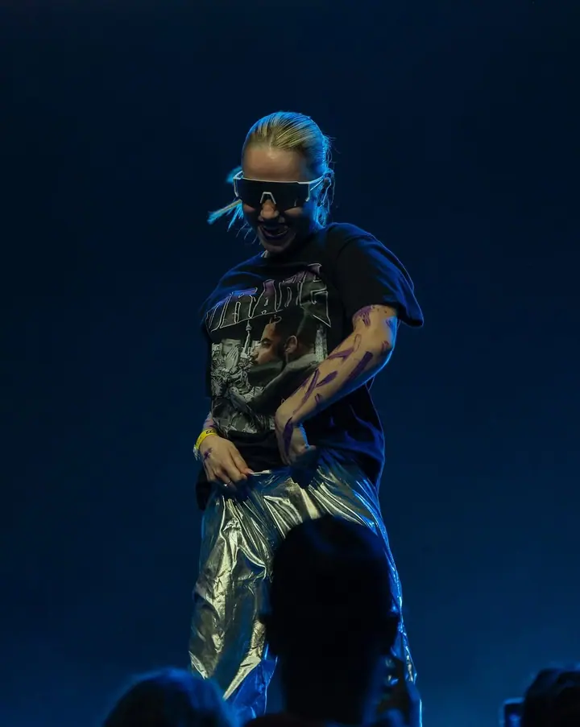
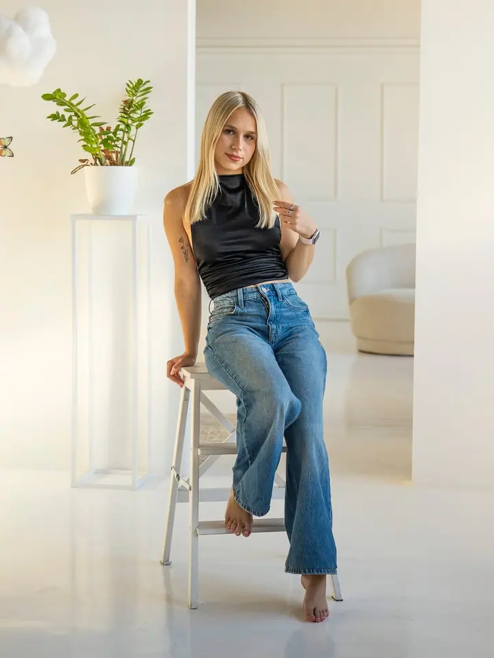
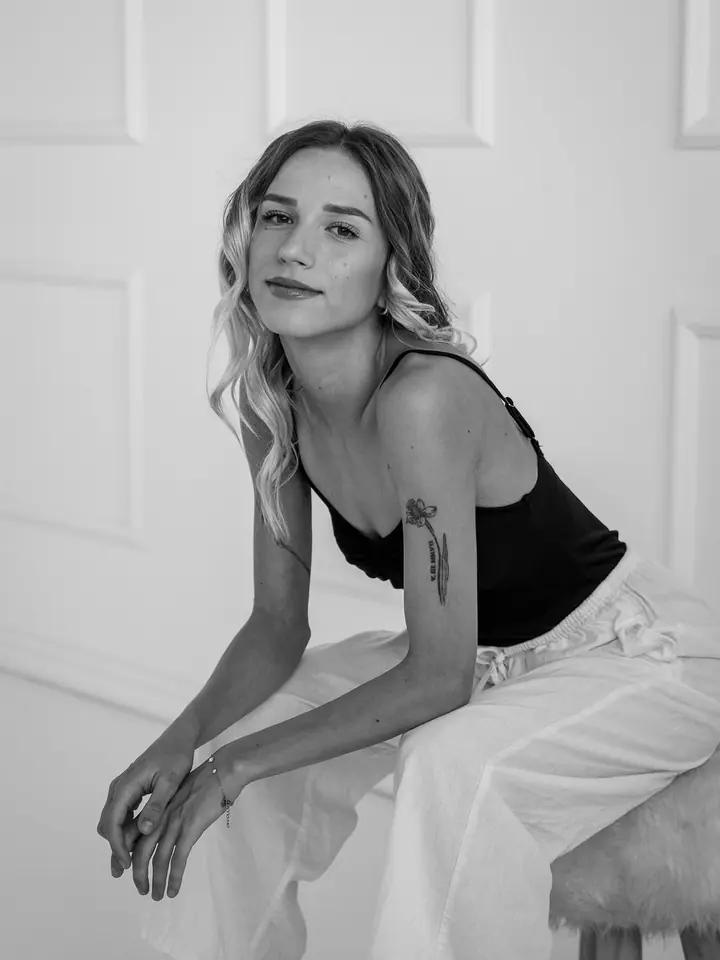
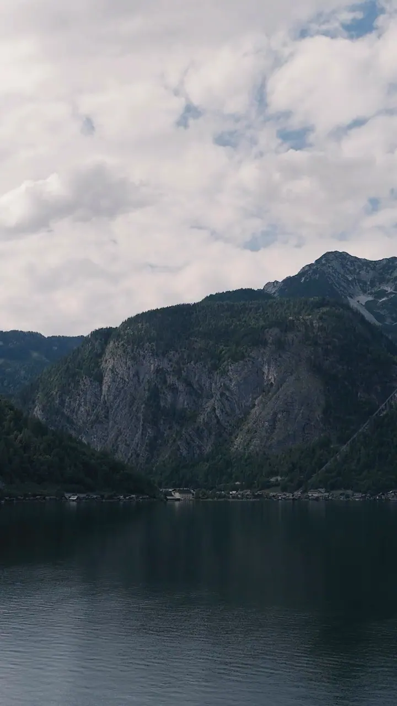
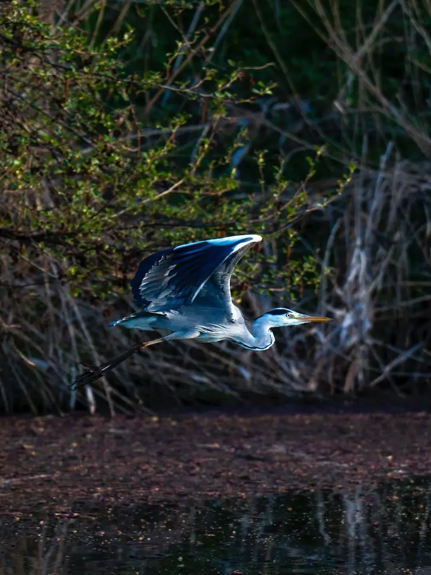

01 / 04
Portréty
Portréty v ateliéru i venku, barevně nebo černobíle. Klidná atmosféra, přirozené pózy a čisté světlo.
Zeptat se na termín→




Fotím a natáčím v Pardubicích
Zeptat se na termín →(01) Ahoj
Jmenuji se Ondřej Janík a pod značkou Ouwexx Production fotím a natáčím v Pardubicích. Baví mě koncerty , portréty i chvíle venku v přírodě . Když potřebujete něco nafotit nebo natočit, napište mi.
(02) Co dělám
01 / 04
Portréty v ateliéru i venku, barevně nebo černobíle. Klidná atmosféra, přirozené pózy a čisté světlo.
Zeptat se na termín→02 / 04
Fotím koncerty, zápasy i závody, tedy všude, kde se něco děje. Zachytím energii pódia i rychlost hřiště.
Zeptat se na termín→03 / 04
Kromě focení i natáčím, od krátkých videí na sociální sítě po záběry z akcí. K dispozici mám i dron DJI Mini 4 Pro na letecké záběry.
Zeptat se na termín→Dále nabízím
Rád fotím venku, ať jde o vašeho psa, nebo o divokou přírodu. Stačí trochu trpělivosti a dobré světlo.
↗(04) Postup
Od první zprávy po hotovou galerii.
Krok 1 z 4
Stručně popište, co potřebujete nafotit nebo natočit, kdy a kde. Ozvu se vám zpátky.
Krok 2 z 4
Projdeme spolu představu, místo a rozsah. U videa domluvíme i formát a délku.
Krok 3 z 4
Na místě pracuji v klidu a nenápadně, ať jde o portrét, koncert nebo sportovní akci.
Krok 4 z 4
Vyberu nejlepší záběry, upravím barvy a u videa sestříhám výsledek. Hotové fotky a video vám pošlu online.
Pódium, hřiště nebo ateliér. Hlavně ať to žije.
(05) Za objektivem
Jsem fotograf a videomaker z Pardubic. Nevybírám si jen jeden žánr. Jeden den stojím pod pódiem, druhý u fotbalového hřiště a další v ateliéru s portrétem.
Fotím na Sony Alpha A7 IV a na letecké záběry beru dron DJI Mini 4 Pro. Díky tomu vám můžu nabídnout fotky i video od jednoho člověka, se stejným pohledem a stejnou barevností.
Ve volném čase mě táhne ven, do hor, k vodě a za zvířaty. Odtud si nosím trpělivost a cit pro světlo, které pak využívám i při práci s lidmi.
Ondřej
Ondřej Janík · Fotograf a videomaker
Ano, fotím i natáčím, takže vám z jedné akce můžu dodat obojí.
Ano, mám dron DJI Mini 4 Pro, se kterým natočím i letecké záběry tam, kde je let povolený.
Jsem z Pardubic a nejčastěji fotím tady a v okolí. Kam dál vyrazit, se můžeme domluvit.
Termín dodání se odvíjí od rozsahu zakázky a domluvíme ho předem, abyste věděli, s čím počítat.
(07) Kontakt
Napište pár vět o tom, co si představujete, a termín, který se vám hodí.
mail@janikondrej.cz